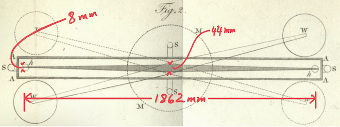
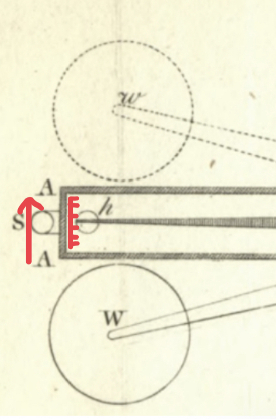
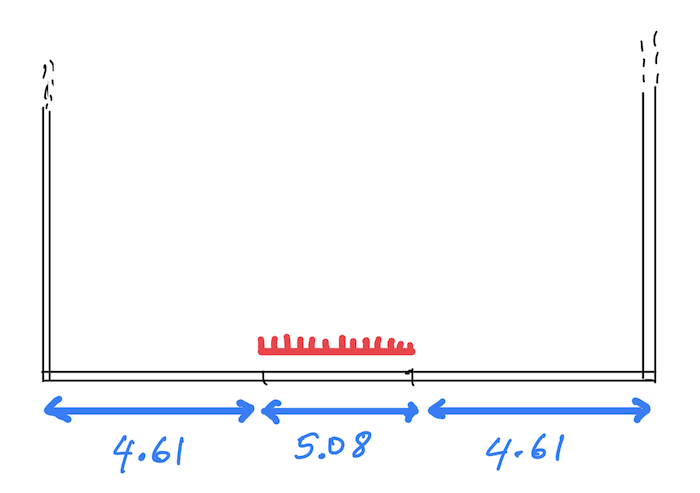

Sarkaç parçalarının ölçüleri
Sarkaç kolu

Büyük gülleler (ağırlıklar) 2 adet
- Küre şeklinde kurşun gülle.
- Ağırlığı: 158 kg (2,439,000 grains) [1 kg = 15432.3584 grains]
- Yarıçapı: 15 cm
- Gülleler hakkında daha fazla bilgi burada.
Küçük gülleler (toplar) 2 adet
- Küre şeklinde kurşun gülle.
- Ağırlığı: 504 gr
- Yarıçapı yaklaşık 2 cm
Sarkaç teli
Kolun asılı olduğu tel.
- Telin uzunluğu: 101.6 cm. (40 inches)
- Cavendish iki değişik tel kullanıyor. İlk kullandığı telin 99.70 cm (\(39\frac{1}{4}\) inch) olduğunu söylüyor.
- Bu tel, gümüş kaplanmış bakırmış ("copper silvered") ve 1 foot'u (30.48 cm) 39.4 grains (0.002553077 kg) imiş.
- Yani telin inceliğini ağırlığından bulacağız.
- Cavendish ikinci telin birim ağırlığını vermiyor, 4. deneyden sonra sadece "bundan sonra kol daha sert bir telden asılmıştır" diyor. (s.79)
- Ama bu sert tel bir öncekinin tam yarısı bir dönem ile sarkacı salındırdığına göre bu teli de deneme yanılma ile bulabiliriz.
Maun Kasa
Ağırlıkları taşıyan bakır çubuklar
Fildişi cetvel

Şekil 1: Kasaya takılı cetvel
- Makalesinin 473. sayfasında, Cavendish, ölçümleri yapmak için kasaya takmış olduğu cetvel hakkında bilgi veriyor.
- Cetvelin her derecesi 0.05 inch yani 1.27 mm.
- Cavendish cetveli kaç dereceye böldüğünü söylememiş fakat 481. sayfada, 40 dereceden bahsediyor: «…In this experiment, the attraction of the weights drew the arm from 11.5 to 25.8, so that, if no cnotrivance had been used to prevent it, the momentum acquired thereby would have carried it to near 40, and would, therefore, have made the balls to strike against the case.»
- Benim bundan anladığım cetvelin 40 dereceye bölünmüş olması çünkü toplar 40 dereceye yaklaşınca kasaya çarpacak gibi oluyorlar.
- Her derece 0.127 cm olduğuna göre, cetvelin uzunluğu \(40 \times 0.127 = 5.08\) cm oluyor.
- Kasanın eni 14.3 cm olduğuna göre, cetveli kasanın ortasına yerleştirdiğini düşünsek, o zaman, şöyle bir geometri çıkıyor:

Şekil 2: Kasaya takılı cetvel (Üstten görünüş)
- Kasaya takılı cetveli kırmızı ile işaretledim.
- Topların yarıçapı 2.5 cm olduğuna göre, kol 40 dereceye geldiğinde toplar da kasaya 2 cm kadar yaklaşmış olacaklar, yani Cavendish'in topların kasaya çarpmasından korktuğu durum ortaya çıkmış olacak.
- Fakat, her şeyin tam ölçüsünü veren Cavendish cetveli nasıl yerleştirdiğini söylememiş.
- Cavendish ağırlığın merkezi ile topun merkezi arasındaki mesafenin 8.85 inch (22.48 cm) olduğunu söylüyor. Fakat, bu mesafenin sabit kaldığını varsayıyor. Mesafeler çok küçük ama yine de kol salındıkça mesafeler değişiyor.
- But on p.500 Cavendish gives another clue about the position of the ivory ruler:
… in the three foregoing experiments, the index was purposedly moved so that, before the beginning of the experiment, the balls rested as near the sides of the case as they could, without danger of touching it; for it must be observed, that when the arm is at 35, they begin to touch.
- If the case is 14.3 cm the balls will not touch the sides of the case at division 35.
- The radius of the balls is 2.5 cm.
- 35 division is, \(35 \times 0.127 = 4.44\) cm
- And the width of the case becomes \(2.5 + 4.44 + 2.5 = 9.44\) cm